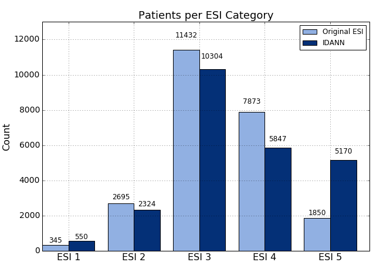

Machine Learning Methods
-

Baseline Model: Logistic Regression (LR)
Our baseline was the replication of the Logistic Regression model implemented by Dugas et al. (2016) , which uses the same data source (CDC) we are using in our model. We replicated features and matched the AUC ROC reported, which allowed us to confirm we are using the correct fields from the CDC files.
-

LR with RFV hierarchical semantic
The next step was adding features that we thought would improve the model performance, features like patient medical history available during triage and the Reason for Visit (RFV) codes as vectors to capture its hierarchical semantic into the model . The LR model performance improved.
-

Random Forest (RF)
We also implemented a Random forest (RF) model which provides a list of feature importance, relevant for model interpretation. However its performance was lower than the LR model.
-

Forward Neural Network (FNN)
Considering that medical data is not linearly separable and LR cannot handle non-linearities, we implemented Deep Neural Networks; which could perform better with enough data for training. We started with a Forward Neural Network, feeding the same features used by the LR model and indeed its performance was higher. We implemented NN models using Keras with Tensorflow as the backend in a Google Cloud Platform.
-
FNN with Embeddings for RFV text
Our next model was a FNN that trained embeddings for the Reason for Visit (RFV) textual descriptions, along with the normalized numerical features. This model performed better than all previous models.
-

Attention Layer for Model Interpretation
Interpretability of our FNN model is essential for its adoption by healthcare communities. Therefore we implemented a feature attribution system determined by an entry Attention Layer in our FNN. We were inspired by recent studies on healthcare DNN models like Google, Rajkomar et al. (Jan 2018), and Georgia Tech, Sha et al. (Aug 2017). Keras/Tensorflow didn't have an attention layer ready to use, then we implemented one for our model based on formulas explained at Raffel et al. . The attention layer learns to determine a set of weights that represent the relative importance of each feature on a specific prediction. The resulting model not only became interpretable, but also gained in performance!
-
Pulling Attention Weights During Prediction
Whenever the model predicts outcomes for an input record, the model assigns the corresponding attention weights to each feature. We implemented a module to pull these weights from the just executed model and join them with the feature list and input values.
-

Model Interpretability
As a result, the FNN model not only provides the predicted probability but also an attention weight for each feature that allow us to sort them by order of influence on the predicted result.


The following hyper-parameters were tuned during training: L2 regularizations, number of layers and hidden units in the NN models, #epochs, optimizers and embedding size. The nadam optimizer was used to handle plateaus which our models run into during stochastic gradient descent. Because the data is imbalance, with most of the samples not resulting on a critical outcome, we used the class_weight option in all our models to handle this situation.
ML Model Performance Results
All our models were evaluated using a 10-fold cross validation and the area under receiver-operator characteristic curve (AUC ROC) metric to compare results with previous papers on predicting critical outcomes based on Electronic Health Records (EHR) data.
| Model ID | Critical Outcomes Model (data for 2009) | AUC ROC 10-Fold Cross Validation |
|---|---|---|
| LR_BAS | Baseline Logistic Regression (LR) Matches published paper: Dugas et al. (2016) | 83.36% (+/- 0.02%) |
| LR_RMH | LR_BAS + Additional Features, RFV hierarchical semantic | 84.55% (+/- 0.02%) |
| RF | Random Forest Features of LR_RMH into a random forest | 81.15% (+/- 0.04%) |
| FNN | Forward Neural Network Features of LR_RMH into a Neural Network | 85.49% (+/- 0.02%) |
| FNN_TE | FNN + Embedding for RVF text | 85.61% (+/- 1.36%) |
| FNN_TE_ATT | Interpretable FNN model: FNN_TE and Attention Layer | 86.01% (+/- 0.01%) |
The Resource Utilization model used the same model architectures than the Critical Outcome models, the difference was in the outcome variable
| Model ID | Resource Utilization Model | AUC ROC 10 Fold Cross Validation | ||
|---|---|---|---|---|
| No Resources | 1 Resource | 2 or more Resources | ||
| FNN_TEA_RS | FNN_TE_ATT with multiclass outcome for resource utilization | 80.24% | 75.26% | 82.25% |
ESI
ESI Assignment
IDANN follows the official definition of ESI as closely as possible to ensure that its use conforms with established emergency department practices, thus minimizing the implementation risk and allowing for faster deployment with minimal disruption.
The actual ESI assignment process is two-fold. For ESI 1 and 2, it requires comparing the probability of critical outcome (CO) with a set of optimized thresholds. If the CO thresholds are not met, then the patient is assigned to ESI 3, 4 or 5 based on whether they require two or more resources, one resource, or no resources, respectively.
The thresholds for ESI 1 and 2 are highly dependent on the size of the groups. We tested various category sizes and ultimately determined that assigning the top 2.5% most critical patients to ESI 1 and the next 10% to ESI 2 produced the maximum true-positive rate while minimizing the false-negative rate of critical outcome. At the same time, we ensured that the absolute size of the two combined categories did not increase for these high-priority, resource-intensive groups. Specifically, we calculated these thresholds to be 0.8676 or greater for ESI 1 and between 0.6724 and 0.8676 (inclusive) for ESI 2.
Results
In order to validate our models and assignment algorithm, we used the data from year 2010 as an additional test set, which had not been seen by the model during training nor hyperparameters tuning.
With this data set, we saw the critical outcome true-positive rate increase from 37.43% to 50.84% while the false-positive rate decreased from 11.22 to 9.76%, compared to the nurse-assigned rates. To put this into perspective we capture 37.4% more critical outcomes in our top two tiers. If we could extend this improvement to the national level, over a million more patients with critical outcomes would be assigned to ESI 1 and 2.
Testing with 2010 data, not seen by models during training
Captures 37.4% more critical outcomes, Over a million at national level
With respect to mortality, we were able to capture 98 out of 129 cases in these top ESI categories (76.0%) compared to 81 cases for the nurse assignments (62.8%). Similar improvement was seen for ICU admission--52.3% compared to 37.0%--but the improvement for OR Catheterization was more modest--29.8% compared to 24.2%.
 2010 data
2010 data
Overall, IDANN’s distribution of these outcomes represents an improvement compared to the original ESI assignment at the higher end of the ESI scale while also improving differentiation of at the ESI 3-5 ranges.
Nonetheless, it is important to note that while IDANN provides a marked improvement compared to an unassisted triage practitioner, there is still a risk of potential misclassification, hence ensuring that the user reviews the assignment is critical.
Apis
IDANN Triage provides an API service that can be used to leverage the models currently in use. This allows the embedding into other applications via REST API. This standard-based service ensures seamless integration with electronic medical record applications. IDANN visualizations can be also embedded on EHR web pages via a Javascript API.
The data flow between the different components is as follows:
- A client application makes a REST post and passes a JSON package with all relevant information to the Service API.
- The API instantiates the predictor function with the appropriate models.
- The predictor leverages the trained models to generate an ESI rating and associated metadata.
- This data is then passed back to the API service in JSON format.
- The client application could to create their own visualizations based on the JSON information provided by the REST api, or it could use IDANN JS API that has built in ready to use visualizations.
- Ultimately the client application will leverage the ESI assignment.
Demo
response = requests.post('http://NNN.NN.NN.NNN:5000/predict_esi', data=json_data, stream=False)
| JSON Request | JSON Response |
|---|---|
| [{"VYEAR":2009,"VMONTH":1,"VDAYR":6, "AGE":69,"ARRTIME":412, "WAITTIME":17,"LOV":70,"RESIDNCE":1, "SEX":2,"ETHUN":2,"RACEUN":3, "ARREMS":1,"TEMPF":978,"PULSE":96,"RESPR":20, "BPSYS":146,"BPDIAS":71, "POPCT":98,"ONO2":2, "GCS":-9,"IMMEDR":2,"PAIN":0,..... | {"co": 0.873719334602356, "rss": 2, "esi": 2, "co_fi": [{"input_value": "1: by ambulance", "featureName": "arrival_model", "attention_weight": 0.023819265887141228}, {"input_value": "1", "featureName": "Age_61_70_range", "attention_weight": 0.023092569783329964}, {"input_value": "1", "featureName": "diabetes_indicator", "attention_weight": 0.021896006539463997}, {"input_value": "1", "featureName": "Reason_Shortness_of_Breath", "attention_weight": 0.021488169208168983}, {"input_value": "0", "featureName": "Age_18_30_range", "attention_weight": 0.018372077494859695}, ..... |
Javascript API Viz
<!-- HTML code embedding IDANN JS viz within the Client web page -->
<iframe src="idannet/idannet.html" style="height:900px;width:800px;" align="center" >
</iframe >
The most prominent visual displayed is the ESI rating recommended for the patient and its position in the ESI scale. Color coding ensures that the triage nurse is able to tell the risk category at a glance.


The critical outcome is the single most important metric in determining the ESI, particularly for high-risk patients. IDANN provides a simple display of where a patient falls in the risk of critical outcomes.
IDANN will display the predictors that had the most impact in the decisions reached by the model. It is expected that this prioritization will give allow experienced practitioners to follow the logic of the recommendation by bringing emphasizing the most important features in a way they may be able to correlate with their clinical experience.

Roadmap
- Closely reviewing false positives and negatives to tune model for better performance.
- Tuning model hyperparameters systematically and adding more training data.
- Further validation of visualizations and ESI re-classification with stakeholders in the ED domain.
Our Amazing Team
Roseanna Hopper
UC Berkeley MS Candidate May 2018
Zenobia Liendo
UC Berkeley MS Candidate May 2018
Manuel Moreno
UC Berkeley MS Candidate May 2018
Thank you to James York-Winegar, for his advice and thoughtful comments as a domain expert throughout the project's development. We would also like to thank our capstone instructors at UC Berkeley, Joyce Shen and Puya Vahabi, for their guidance and support.